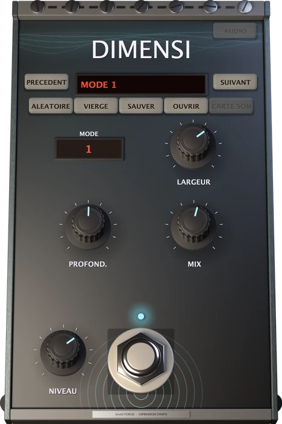
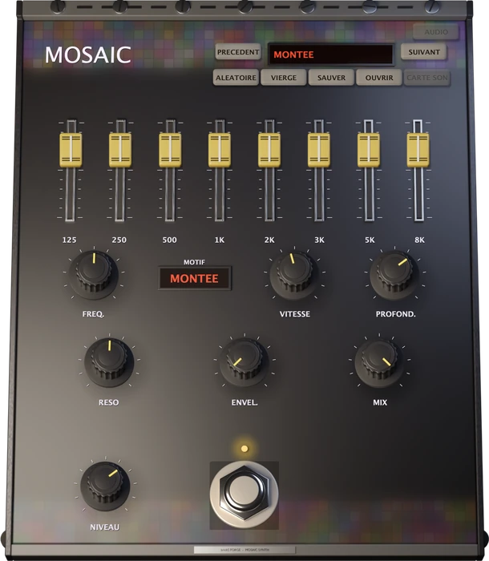
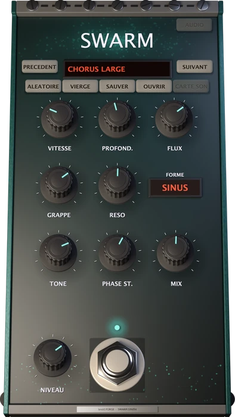

Le catalogue
Les 11 plug-ins : modulation
 CARILLONModulateur en anneau à diodesModulation
CARILLONModulateur en anneau à diodesModulation CHOIREffet de chœur · 1 à 24 voixModulation
CHOIREffet de chœur · 1 à 24 voixModulation
DIMENSIONChorus de studio à quatre modesModulation DRIFTChorus de synthé vintageModulation
DRIFTChorus de synthé vintageModulation ENSEMBLEChorus d'ensemble à cordesModulation
ENSEMBLEChorus d'ensemble à cordesModulation HELIXPhaseur de 4 à 12 étagesModulation
HELIXPhaseur de 4 à 12 étagesModulation
MOSAICRéseau de huit filtres à motifsModulation PETALChorus et vibrato compactsModulation
PETALChorus et vibrato compactsModulation
SWARMChorus et flanger à grappeModulation TWINSDoubleur de voixModulation
TWINSDoubleur de voixModulation VERTIGOPédale stéréo · ping-pong, orbite, essaimModulation
VERTIGOPédale stéréo · ping-pong, orbite, essaimModulation